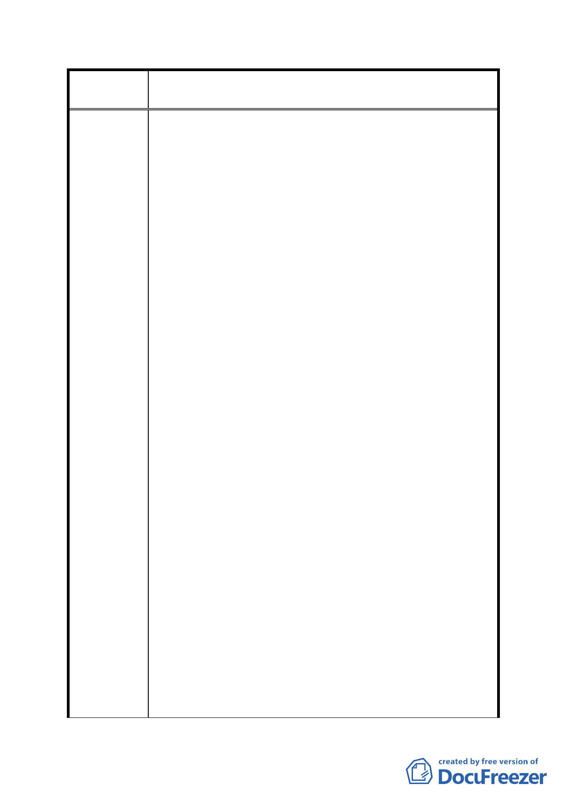

案
名
修訂臺北市「基隆河（中山橋至成美橋段）附近地區土地使
用分區與都市設計管制要點」（北段地區）計畫案
物、商務及住宅等產業發展需求，並結合大眾運輸系統與
留設公共開放空間，達到緊密城市 (Compact City)之永
績都市目標。為提供大量之開放空間，然而細部計畫通盤
檢討中提出各種使用分區採用綜合設計放寬規定者，其建
蔽率不得低於 40％，惟建築基地面積在 1 公頃以上者，經
臺北市都市設計及土地使用開發許可審議委員會審議通
過者，其建蔽率可酌予調整 5％。其規定與臺北好好看為
鼓勵留設大量公共開放空間之理念不符合。
三、建築物立面寬度議題 :
原先細部計畫並無此項規定，依簡報內容「議題四：建議
修正建築物高度規定」之建議修正方案：街廓編號 A1、
A2、 B1、 B2 建築基地面向基隆河及山景側之建築物立
面，高於地面 40 公尺以上之建築物立面寬度不得大於土
地細分規模東西向境界線長度之三分之一。此時若按上述
規定，建築設計將有大幅修改並重新設計，將影響各案參
與「促進都市再生 2010 年臺北好好看」之時程，並造成
本公司更大的人力與物力成本開銷。
四、建築容積議題 :
臺北好好看政策為鼓勵留設開放空間，提升都市生活品
質，分別訂有相關獎勵措施。因此臺北好好看之審理辦法
應秉持公平性與一致性，容積獎勵之標準應與其他地區之
臺北好好看案件一致，而細部計畫通盤檢討提出臺北好好
看申請案增加之獎勵容積之總和不得超過基準容積之
50%(不含容積移轉基準容積之 20％)， 限定本區之容積上
限，與其他區域之臺北好好看案件審查機制不符，因此本
區不應以大彎北段細部計畫通盤檢討限定參與「促進都市
再生 2010 年臺北好好看」個案之容積上限。
五、建築物高度議題 :
本公司為配合臺北好好看之計畫政策，留設大量開放空
間，得依「促進都市再生 2010 年臺北好好看」容積獎勵
機制規定增加容積與高度。未參與「促進都市再生 2010
- 88 -